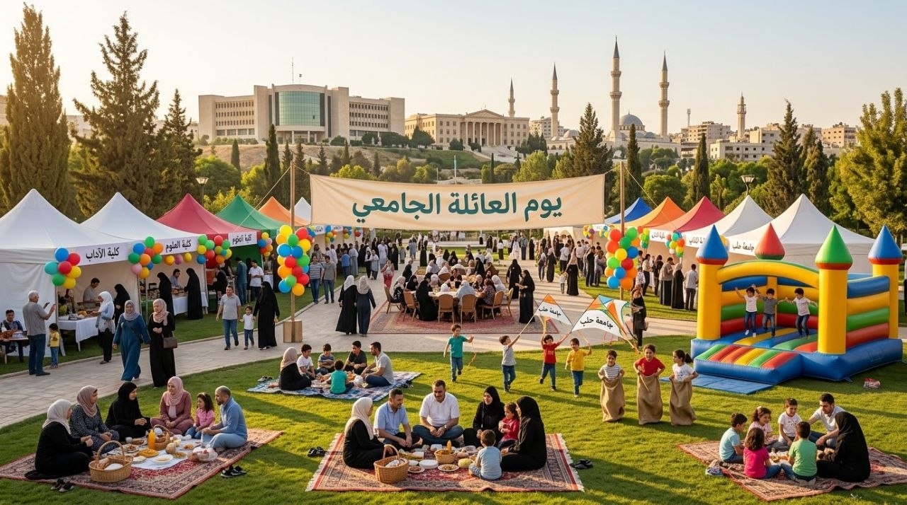
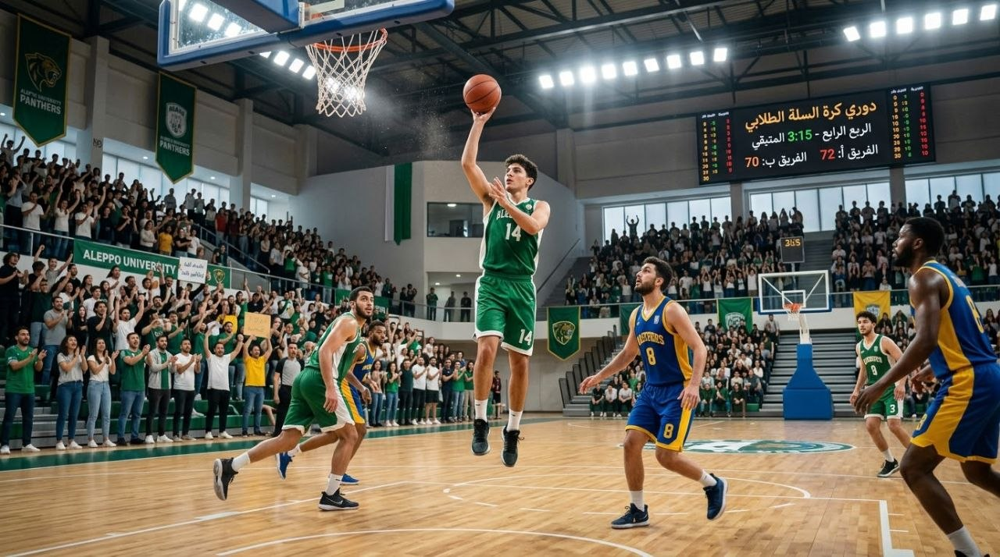
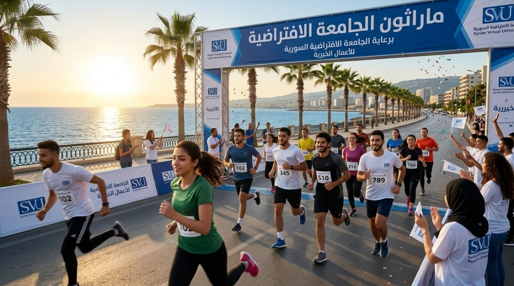

فعالياتي المفضّلة
وظيفة مقرر BWP401
فريق عمل المشروع
لوريس محمد ممتاز زيتون
loris_342143 / C8
عمل صفحة about.html - contact.html
محمد خالد السيد
mohamad_353851 / C8
عمل صفحة events.html - event.html
محمد عثمان مبيض
mohamad_349742 / C8
عمل صفحة index.html
أبرز الفعاليات هذا الأسبوع:
تصنيفات سريعة
الفعاليات حسب التصنيف

مهرجان الثقافة الرقمية
فعالية تجمع الطلاب المهتمين بالتقنية والثقافة الرقمية مع عرض مشاريع ونقاشات حول تأثير التكنولوجيا.

معرض مشاريع التخرج
عرض أفضل مشاريع التخرج من مختلف الكليات، مع تقييم من لجنة أكاديمية.

اليوم العلمي لبرنامج المعلوماتية
فعالية علمية لطلاب الهندسة المعلوماتية عن الذكاء الاصطناعي ومشاريع الطلاب ومحاضرات تخصصية.

ندوة التعليم الالكتروني
ندوة علمية تناقش مستقبل التعليم الإلكتروني وتطوير تجربة الطالب في الجامعات الافتراضية.

اليوم العائلي للطلاب
فعالية ترفيهية بتجمع الطلاب وعائلاتهم بأنشطة وألعاب وعروض خلال يوم مفتوح بالجامعة.

البطولة كرة السلة الجامعية
دوري كرة سلة يُقام على مدار يوم كامل بمشاركة فرق من مختلف الكليات، مع مباريات تنافسية وجمهور من الزملاء، وحفل تتويج للفريق الفائز في نهاية اليوم.

بطولة ماراثون الجامعية
سباق جري مفتوح للطلاب والخريجين والكادر بمسافة 5 كم، لتشجيع النشاط البدني ونمط الحياة الصحي، مع شهادات مشاركة وجوائز للمراكز الأولى.
البطولة كرة القدم الجامعية
فعالية رياضية تجمع فرق كليات الجامعة في أجواء تنافسية ودّية، تهدف إلى تعزيز روح الفريق والتواصل بين الطلاب، مع كأس للفريق الفائز وميداليات للمشاركين.
لا توجد فعاليات موسيقية في الوقت الحالي
أحدث الفعاليات
معرض مشاريع التخرج
فعالية ثقافية أكاديمية يتم فيها عرض أفضل مشاريع التخرج من مختلف الكليات، مع تقييم من لجنة أكاديمية.
اليوم العائلي للطلاب
فعالية ترفيهية بتجمع الطلاب وعائلاتهم بأنشطة وألعاب وعروض خلال يوم مفتوح بالجامعة.
بطولة كرة السلة الجامعية
دوري كرة سلة يُقام على مدار يوم كامل بمشاركة فرق من مختلف الكليات، مع مباريات تنافسية وحفل تتويج للفريق الفائز.